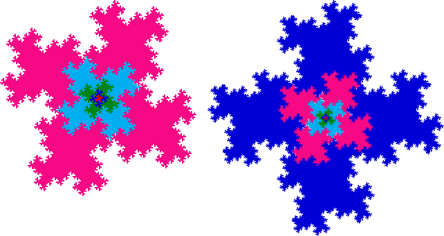

| This process of grouping and scaling has some limitations that result from the difference between points and pixels. |
| When scaled by a factor of |
| For the purpose of understanding this method, these gaps can be ignored. |
|  |
| Tilings based on different shapes can be quite interesting. This construction offers much room for experimentation. |
Return to Method 1.